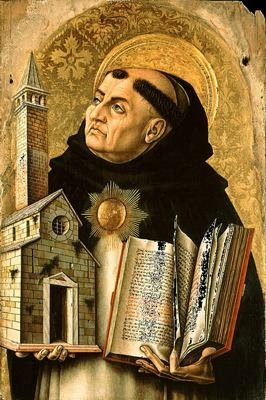

"DERRADEIRAS PALAVRAS"

Tomás de Aquino foi um homem admirável, pelo firme caráter, pela notável capacidade de memorização, pela profundidade de seus conhecimentos e pelas dimensões incalculáveis de uma fé consistente e direcionada num cristianismo puro e objetivo, fundamentado na Sagrada Escritura.
Seu conhecimento evoluiu sempre estimulado pela lógica do raciocínio, que abria horizontes e oferecia a beleza de um entendimento de conformidade com a verdade cristã.
Esta impressionante coleção de dons e virtudes, fizeram com que os seus escritos fossem acolhidos e respeitados pela Igreja, que adota e preconiza uma quantidade preciosa de conceitos, elaborados com excelente primor teológico e racionalmente enquadrados na real filosofia da vida.
Tomás de Aquino era essencialmente um homem de fé, que procurou através do magistério, estimular o cultivo desse dom Divino que recebemos no Batismo, pelo ESPÍRITO SANTO.
Conta-se que sua fé era tão simples e pura, que ele acreditava que os Padres nunca mentissem. No seu pensamento estava enraizado um desejo sublime ligado a dignidade sacerdotal inerente a todos os presbíteros, que o envolvia de tal modo e lhe transmitia uma tão grande satisfação só ao imaginar, que as palavras que saíam dos lábios de um Padre só deviam traduzir a expressão maior da plena verdade. Raciocinava o Santo homem, que o dom de consagrar as Sagradas Espécies (o Pão e o Vinho), concedido aos sacerdotes na celebração da Santa Missa quando rezando a Consagração e invocando a ação do ESPÍRITO SANTO, que transforma o Pão e o Vinho, em Corpo, Sangue, Alma e Divindade de NOSSO SENHOR JESUS CRISTO, é um dom tão especial e tão sagrado, que convida e estimula os presbíteros, a uma existência mais digna e perfeita, como o PAI DO CÉU é perfeito.
"CONVITE"
Este Site foi construído pelo Apostolado dos Sagrados Corações. Clique aqui ou no endereço abaixo para visitar o nosso PORTAL. Nele encontrará uma apreciável quantidade de Sites sobre o CRIADOR, o ESPÍRITO SANTO, JESUS DE NAZARÉ, sobre NOSSA SENHORA, os ANJOS do SENHOR e Sites que apresentam a Vida e Obra de diversos SANTOS. Todos eles elaborados com cuidadosa dedicação, essencialmente fundamentados na Sagrada Escritura, na Tradição Cristã, nas Manifestações Sobrenaturais e na Vida e Obra dos Santos, com a intenção maior de somente informar a Verdade.
http://www.apostoladosagradoscoracoes.com.br/
"E-MAIL"
Desejando comunicar-se conosco, por favor utilize o E-mail abaixo:

"FIRMAS DE BUSCAS"